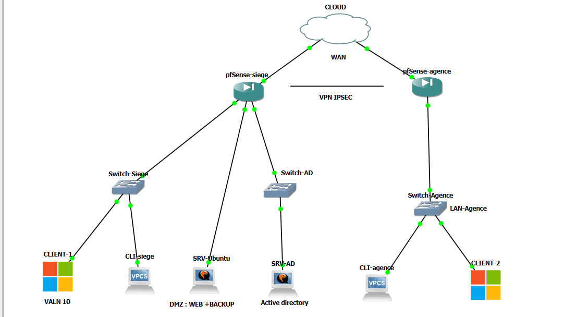
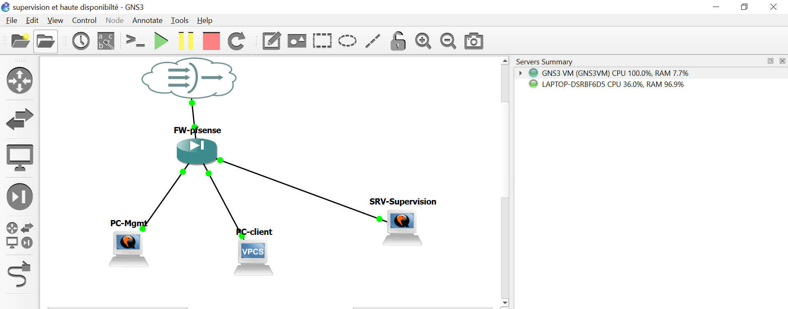
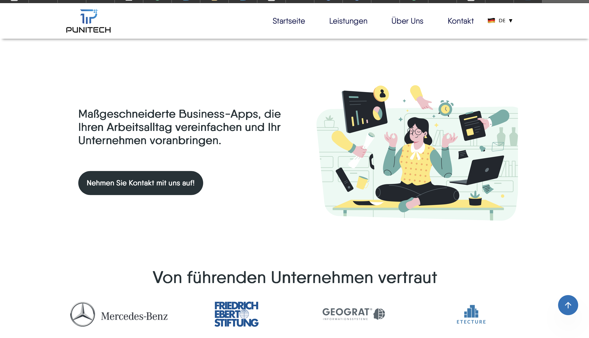

Double cursus Socle Numérique en informatique & BTS SIO option SISR (solutions d'infrastructure
,systèmes et réseaux ), je développe une expertise technique centrée sur la gestion et la
sécurisation des infrastructures.
Dans le cadre de la validation de mon diplôme et pour poursuivre ma montée en compétences, je
suis activement à la recherche d’une alternance dès septembre 2026.
Mon objectif : Intégrer une équipe technique pour relever vos défis d'infrastructure et
contribuer activement à la performance de votre système d'information.
Conception et mise en place d’une infrastructure réseau d’entreprise multi-site (siège et agence)

Déploiement d’une solution de supervision de l’infrastructure

Pentesting du site web Punitech

1. Données personnelles : Ce site ne collecte aucune donnée personnelle sans votre consentement explicite.
2. Sécurité : Les informations éventuellement transmises (email, téléphone) sont utilisées uniquement dans un cadre professionnel et ne sont en aucun cas stockées ou partagées.
3. Confidentialité : Aucune technologie de suivi (cookies, tracking) n’est utilisée sur ce site.
4. Conformité : Ce site respecte les principes du RGPD et les bonnes pratiques en cybersécurité appliquées aux systèmes et réseaux.
5. Contact : Vous pouvez demander la suppression de toute information vous concernant via l’adresse email fournie.